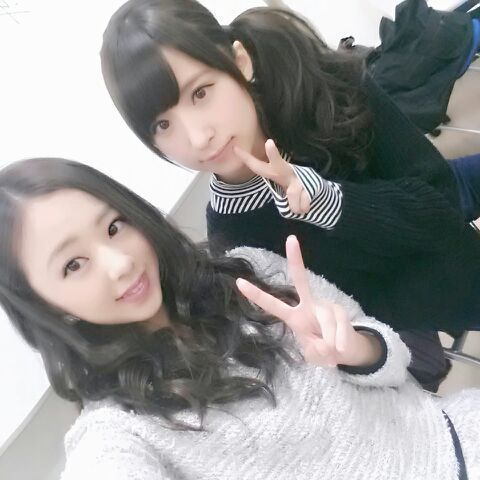
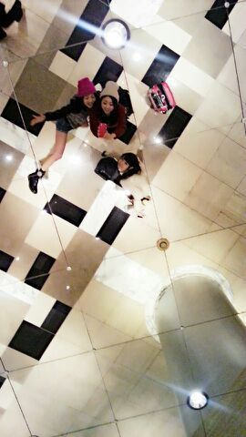

皆たん こんにちわ Rottyだよ〜☆
今日は 朝っぱらから 舌のさきッチョを
火傷してしまった(´・ω・｀)笑
あのね〜 カキフライを『バグッ』って
口の中に入れたら
あっついお汁が出てきて
「あちちぃ〜」ってなったの..
いぇ〜い (*´ω｀*)
でも しょっちゅうしょっちゅう
火傷してるし なれてるから
カキフライおいちく頂きまちた〜 )))
とゆうことで 明日は
またまた ゆったんと一緒にお仕事でちゅ.
ゆたんと 大阪〜 大阪〜
めっちゃ楽しみです (о´∀`о)
ゆたんと一緒なん 楽しいねぇ〜ん.
二人で絡んでると
あの 最もうるさい Nラリンって子に
『うっるさーい』って言われる ♪笑
Nらりんちゃんは 本当、もう、
あれだよ、あれ... ロケバスに入ると
あっ 言わんとこっ\(*´∇｀*)/
せいらりん好きだよ. ぁ
http://www.cyclemode.net/
↑これ見てたら 自転車欲しくなってきたよ...(>ω<｀)
お洒落な自転車乗って
ブラリ旅〜♪したひっヒッヒッー
ではでは〜 明日よろちくお願いしまちゅ！！
みしゃセンパイ。

神戸にて、
あにあに ろってぃ- ゆたん

天井が かがみ。
ばいば-い＼(^o^)／